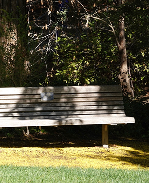
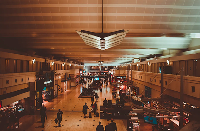

Research: Visual Thinking Analysis

Part One
The image was taken by Yingyi, showing a wooden bench in an outdoor space. The bench is surrounded by trees, grass, and sunlight. One of the most interesting aspects of the image is the way the sunlight filters through the trees to create shadows on the bench and grass. This makes the bench become a main focus point since it is lighter than the darker background. The most obvious aspect is that the bench is in a park or garden surrounded by trees. The most mysterious aspect is that there is a plaque on the bench, but the text is too small to read which makes you wonder who it is dedicated to.
A suggestion I have to make the image more interesting is to experiment with different angles. For example, Yingyi could photograph the bench at a lower angle or so it's partially hidden behind the trees to make it even more mysterious. Another idea is to photograph the bench at different times of day, so that the weather can create different shadows or lighting.
Part Two

This is an image of an airport I shot. It's interesting because even though the mood seems warm and energetic, I was feeling the complete opposite on my return home from saying a final goodbye to someone. It makes you wonder what is going on in the lives of the other people in the background. This image relates to my collection because even during depressing days, there are still so many beautiful things around us. The airport can be a busy and stressful place, but the architecture and warm lights create a sense of comfort.
My collection says that I try to find beauty in the ordinary moments, even when things aren't going well. I notice small details that other people may overlook. My collection is a reminder that even during the darkest moments, there are little things worth appreciating. Sometimes, the smallest things make a big difference.
I could make my images more compelling by playing with lighting and color to emphasize the beauty of the ordinary. I'll experiment with contrast and warmer tones, and add captions to each image.